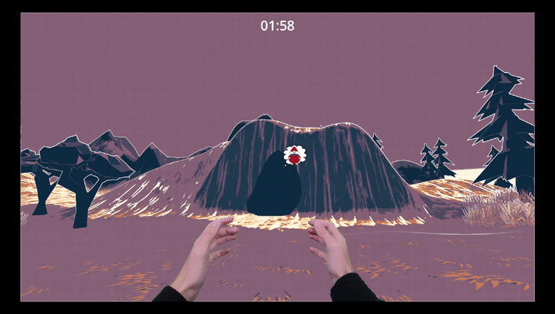
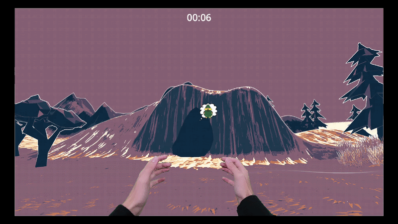

GAME JAM • FALL 2025
Feed The Beast
Feed the beast to keep it alive, unless you wanna be a snack.
Play Feed The Beast on itch.io ↗Project Overview
In this game you must run around a small area and feed the beast in a cave the exact kind of food it wants. You have a set amount of time before the beast will eat you if you don't feed it what it wants in time. Don't be the snack, feed it enough snacks to win!
My Contributions
I programmed in the timer that displays during the game. You have 2 minutes to get the necessary item the beast wants, and everytime you are successful, the timer resets back to 2:00. If the timer runs out, you lose the game, and the game over screen displays. The game over screen is also what I created, featuring my mom's cat Dale (he is the beast).
Gameplay and Showcase


Team & Credits
I worked with 5 other people on Feed The Beast as part of the October 2025 UWW GAMED game jam. The theme was "Keep it Alive" and we had 48 hours to make this game. Here's everyone who worked on it below:
- Josh — Programming and UI/UX Design
- Kain — Management and Music
- Drew — Programming
- Noah — 2D Art and Level Design
- Michael — Programming
- Jacob — Programming